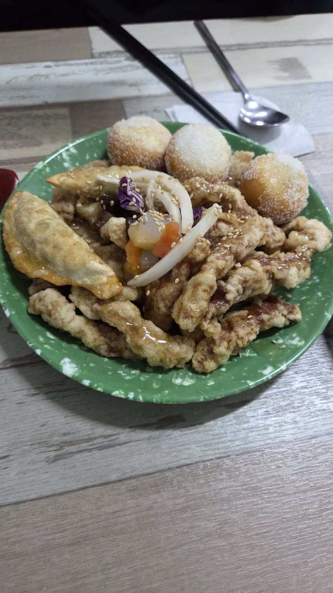
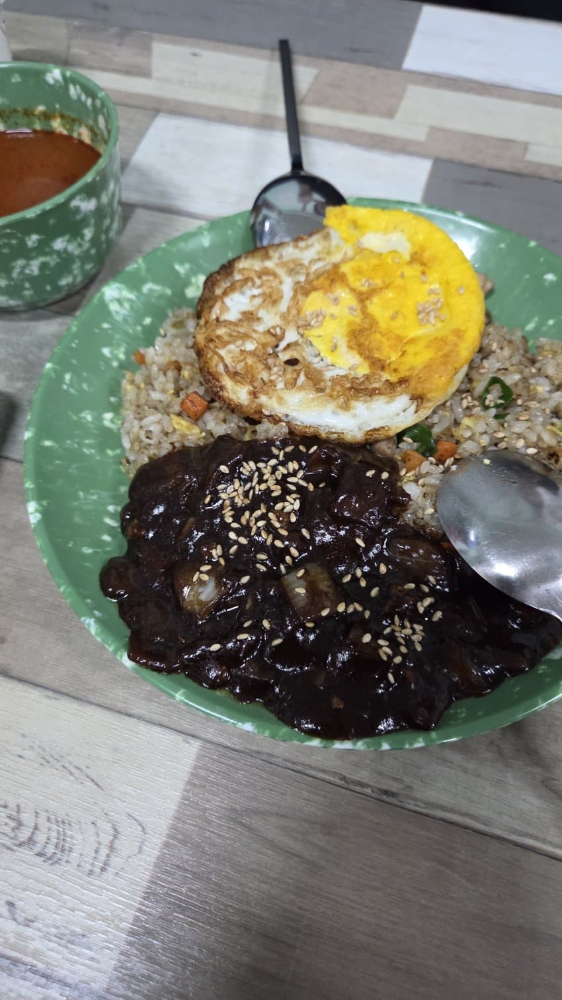
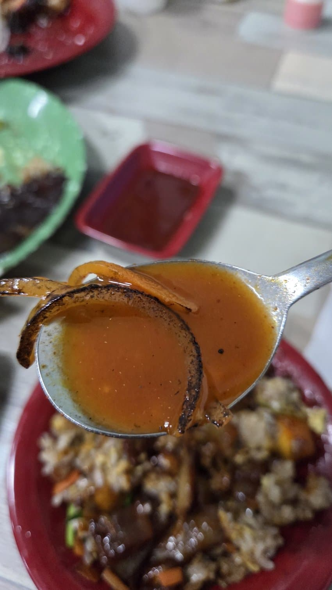

저 꿀빵은 항상 사람당 1개씩 야쿠루트랑 서비스로 주신다. 단골이라 하니까 군만두도 하나 주심. 탕수육은 요즘식 눅눅좆쌀탕수육이 아니라, 옛날식 바삭한 탕수육임 밥알이 제대로 볶아짐 짬뽕국물은 제대로 야채 볶아서 화유같은 가짜불향말고 제대로된 불맛남. 출처: 싱글벙글 지구촌 갤러리 [원본 보기]
댓글
수집 당시 댓글 94개
버러지 · 11.09 01:22:06
와히라나고미 · 11.09 01:22:22
방귀진동연구원수석박사 · 11.09 01:22:37
ㅇㅇ · 11.09 01:23:06
· 코스피폭락 · 11.09 02:29:20
· ㅇㅇ · 11.09 09:38:59
ㅇㅇ · 11.09 01:23:08
ㅇㅇ · 11.09 01:25:19
· ㅇㅇ · 11.09 01:25:48
· 단간론파 · 11.09 01:33:04
· ㅇㅇ · 11.09 01:36:12
· ㅇㅇ · 11.09 01:37:46
· ㅇㅇ · 11.09 01:40:47
· ㅇㅇ · 11.09 05:33:33
· 장은하 · 11.09 09:46:17
ㅇㅇ · 11.09 01:25:38
ㅇㅇ · 11.09 01:26:03
땡그랑땡 · 11.09 01:27:31
· ㅇㅇ · 11.09 01:31:54
· 땡그랑땡 · 11.09 01:32:25
· 개댇지 · 11.09 01:35:43
· ㅇㅇ · 11.09 01:37:22
· 므이마 · 11.09 01:37:31
· ㅇㅇ · 11.09 01:37:58
· ㅇㅇ · 11.09 01:38:23
· 므이마 · 11.09 01:41:06
· 땡그랑땡 · 11.09 01:41:42
· ㅇㅇ · 11.09 03:04:38
· ㅇㅇ · 11.09 03:15:10
· ㅇㅇ · 11.09 05:07:08
· ㅇㅇ · 11.09 07:29:09
· ㅇㅇ · 11.09 07:52:04
ㅇㅇ · 11.09 01:29:25
무삭제요리 · 11.09 01:29:30
ㅇㅇ · 11.09 01:31:55
ㅇㅇ · 11.09 01:36:07
10콜맨 · 11.09 01:36:48
ㅇㅇ · 11.09 01:43:21
ㅇㅇ · 11.09 01:44:03
· 병신보면짖는개 · 11.09 03:08:38
NOWMAD · 11.09 01:45:05
ㅇㅇ · 11.09 01:45:13
· ㅇㅇ · 11.09 02:23:13
· ㅇㅇ · 11.09 02:59:05
나즈갑드플싱킹 · 11.09 01:49:57
ㅇㅇ · 11.09 01:51:11
ㅇㅇ · 11.09 01:51:46
고졸공익공시생 · 11.09 02:00:31
ㅇㅇ · 11.09 02:00:44
ㅇㅇ · 11.09 02:02:10
ㅇㅇ · 11.09 02:08:35
ㅇㅇ · 11.09 02:17:43
· ㅇㅇ · 11.09 02:22:13
· ㅇㅇ · 11.09 02:39:37
· 파치카 · 11.09 02:48:19
ㅇㅇ · 11.09 02:25:26
땨뗘(봇) · 11.09 02:26:07
ㅇㅇ · 11.09 02:27:21
ㅇㅇ · 11.09 02:28:44
ㅇㅇ · 11.09 02:29:09
ㅇㅇ · 11.09 02:30:45
ㅇㅇ · 11.09 02:32:31
ㅇㅇ · 11.09 02:34:04
ㅇㅇ · 11.09 02:36:49
클레이모어2026 · 11.09 02:40:09
ㅇ이응이ㅇ · 11.09 02:41:06
ㅇㅇ · 11.09 02:41:23
ㅇㅇ · 11.09 02:41:40
ㅇㅇ · 11.09 02:42:27
37살월220 · 11.09 02:45:41
ㅇㅇ · 11.09 02:47:05
· 소설쟁이 · 11.09 03:15:11
파치카 · 11.09 02:49:04
ㅇㅇ · 11.09 02:55:11
· ㅇㅇ · 11.09 03:20:33
ㅇㅇ · 11.09 02:58:41
ㅇㅇ · 11.09 03:00:26
ㅇㅇ · 11.09 03:38:58
ㅇㅇ · 11.09 03:52:04
· 타바코쉬카 · 11.09 04:35:24
· ㅇㅇ · 11.09 05:09:49
ㅇㅇ · 11.09 05:26:25
ㅇㅇ · 11.09 09:04:41
ㅇㅇ · 11.09 09:04:46
ㅇㅇ · 11.09 09:26:24
1212 · 11.09 09:44:11
ㅇㅇ · 11.09 10:02:03
ㅇㅇ · 11.09 10:03:23
ㅇㅇ · 11.09 10:06:32
ㅇㅇ · 11.09 10:36:39
ㅇㅇ · 11.09 10:37:26
ㅇㅇ · 11.09 10:44:43
ㅇㅇ · 11.09 11:20:08
ㅇㅇ · 11.09 16:43:57